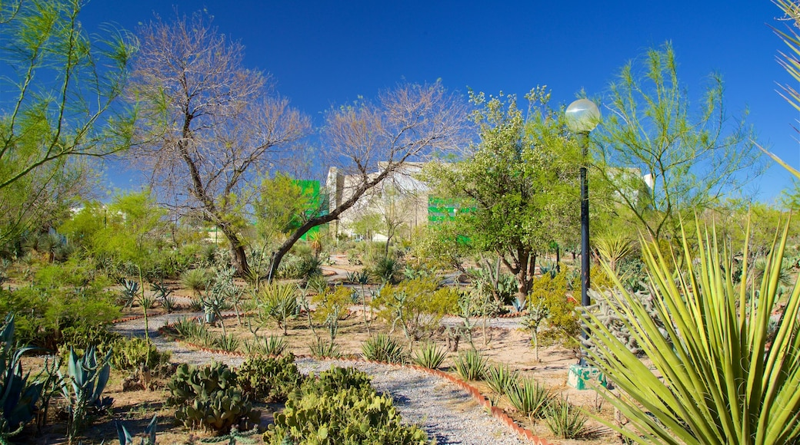

¿Qué es?
El Parque Central es un espacio que combina la historia, la cultura y la naturaleza, ofreciendo a los visitantes una experiencia única.

¿Qué ofrece?
Tiene un lago artificial, áreas deportivas, juegos mecánicos y un mueso interactivo, el parque es un lugar ideal para disfrutar con la familia. Además, el parque ha sido rediseñado para incluir nuevas amenidades y atracciones, como un cobertizo para botes y un espacio para picnics.
¿Por qué es importante?
El Parque Central es considerado uno de los pulmones de la ciudad, un espacio recreativo donde la vegetación y la fauna se relacionan con los visitantes, ofreciendo un auténtico oasis en medio del asfalto y las arenas del desierto de la ciudad.